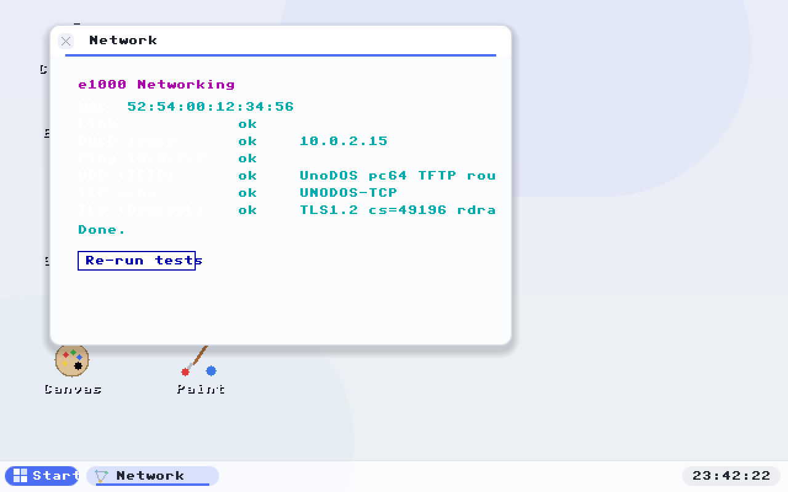

Networking
A native NIC driver, a from-scratch TCP/IP stack, DHCP and DNS, and CA-validated TLS 1.2 — all built in-tree, no third-party OS underneath.
The stack
The e1000 driver finds the card by PCI scan, enables bus-mastering, reads the MAC from
EEPROM and drives RX/TX descriptor rings by MMIO — publishing the family's uno_nic_t
(send / recv / link). On top sits a hand-rolled IPv4 stack: ARP with a small cache, IPv4 with checksums,
ICMP echo, UDP, a DHCP client (which also learns the DNS resolver and gateway), and a minimal TCP
(active open, retransmit, close). Static config matches QEMU's SLIRP; DHCP overrides it.
The Network self-test
The Network app exercises the whole stack end-to-end and reports each step. Under an emulator it runs against QEMU's SLIRP services; on metal it drives a real adapter.

TLS & HTTPS
https:// URLs go over CA-validated TLS 1.2 using BearSSL's br_x509_minimal engine
with a bundled root store of 14 common CAs (ISRG/Let's Encrypt, DigiCert, GlobalSign, USERTrust, Amazon,
Google GTS, and more). The validation clock comes from the UEFI real-time clock, so certificate validity
windows are enforced. BearSSL implements TLS 1.2, which nearly all sites still accept.
USB Ethernet on metal
Some laptops — the X1 Carbon among them — have no wired NIC, so networking on metal rides a USB Ethernet adapter, which needs a USB host stack. pc64 includes a polled xHCI (USB 3.0) driver and an AX88179 USB-gigabit driver; when no e1000 is present, the TCP/IP + TLS + browser stack falls back to the USB NIC automatically. Wi-Fi is the remaining gap.